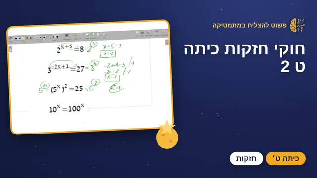
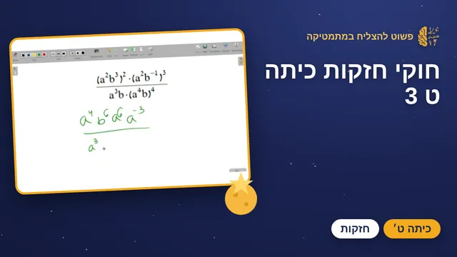
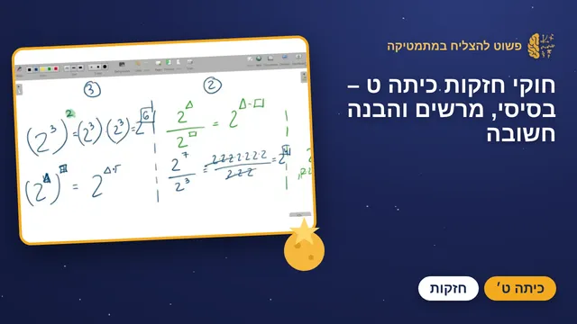
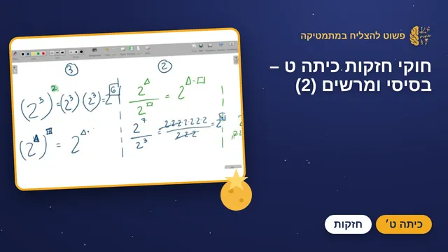

פשוט להצליח במתמטיקה › כל הנושאים › חזקות
חזקות – סרטוני הסבר ותרגול
11 סרטוני הסבר ותרגול בנושא חזקות – לכיתה ט׳, שאלון 472, שאלון 571. כל נושא מוסבר מהקל אל הקשה: קודם הרעיון, אחר כך תרגילים, ובסוף שאלות בסגנון בגרות. הכול בחינם, בשיטת "פשוט להצליח".
רוצים לעקוב אחרי ההתקדמות?נרשמים בחינם, וכל סרטון שראיתם מסומן ✓. ממשיכים מכל מכשיר.
הצטרפות בחינם ←חזקות – כיתה ט׳ כל הנושאים של כיתה ט׳ ←
 מה זו חזקה – כיתה ז
מה זו חזקה – כיתה ז חוקי חזקות ושורשים – חזרה מהירה
חוקי חזקות ושורשים – חזרה מהירה
חוקי חזקות כיתה ט 2
חוקי חזקות כיתה ט 3 חוקי חזקות כיתה ט 4חוקי חזקות כיתה ט 1
חוקי חזקות כיתה ט 4חוקי חזקות כיתה ט 1
חוקי חזקות כיתה ט – בסיסי, מרשים והבנה חשובה חוקי חזקות כיתה ט – תרגילים ביחד בכיתה
חוקי חזקות כיתה ט – תרגילים ביחד בכיתה
חוקי חזקות כיתה ט – בסיסי ומרשים (2)תרגיל בפירוק חזקות – איך לאחד ולחלק שברים עם מעריכים